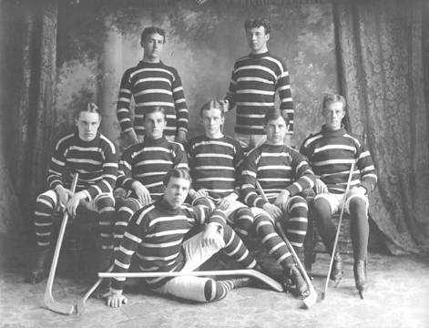
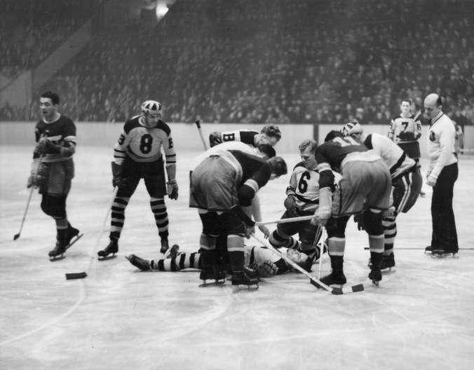
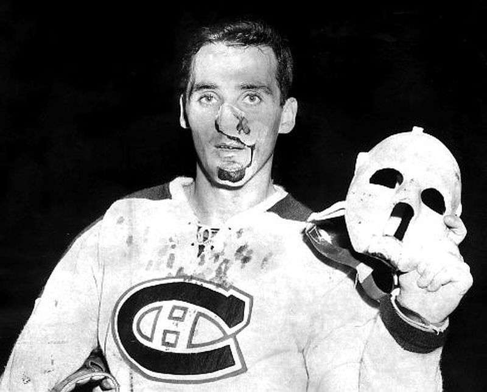
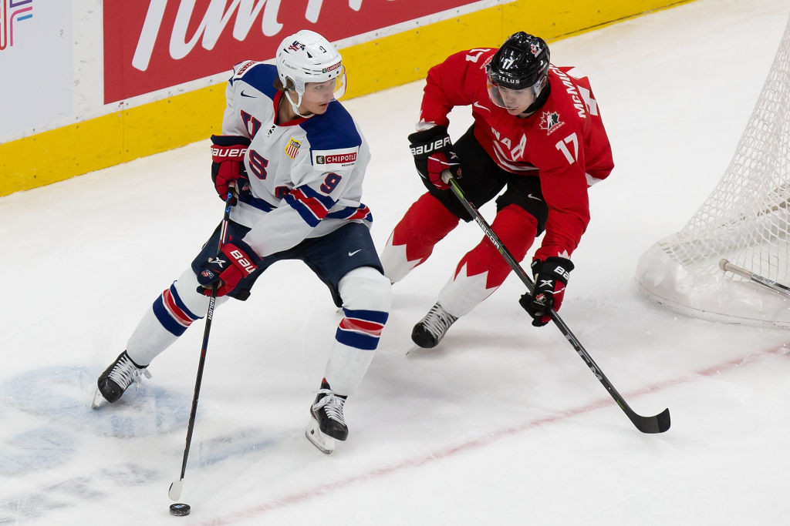

When the sport was first played in the 1870s, there were no protective gear and players simply
wore warm clothes. They attached blades to the bottom of boots to use as skates and their
sticks were made using a single piece of wood. The puck was also made of wood or rubber balls
that were cut in the shape of a puck.

In the 1880s some players chose to wear shin pads made from wood or leather, being the first
piece of protective gear worn by players. In 1896, goaltender George Merritt used cricket pads
giving him increased confidence in blocking shots.
The early 1900s is where protective gear began to become more popular among players. They
used felts to pad their upper body as well as for kneecaps which they could also use leather.
Felt again was used in their gloves as well as animal hair and bamboo to protect their wrists.
In the 1920s and 1930s, the need for protective gear became greater because of the increased
physical accidents in the sport. Elbow and forearm protection became important as players would
fall on the ice more frequently. Gloves were reinforced with fiber after Babe Siebert broke his
thumb in the early 1930s. Helmets were surprisingly not well received when they were introduced
to teams but gained some popularity when Eddy Shore upended Ace Bailey from the rear, causing
Bailey to suffer severe injuries from falling on his head. Even so, helmets only became common
place in the 1970s and finally made mandatory in 1979.

In 1927, Elizabeth Graham, the women’s university league was the first to wear a
goalie mask, but it wasn’t until thirty-three years later that the goalie mask was introduced in
the NHL. After being hit in the face with a slapshot, Jacques Plante adopted the hockey mask.

After WWII, fiberglass and plastic equipment became widely used and revolutionized protective
gear. Gear was now sturdier and offered better protection, which considerably reduced injuries
due to falls and shot blocks and made helmets much more effective.
